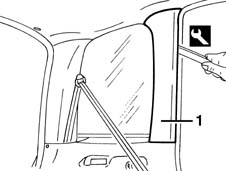
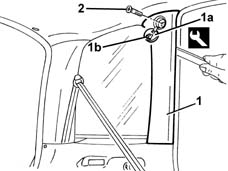

7040H42 rear pillar trim - r r
- Path
- Procedures > 70 FITTINGS > 7040 BODYSHELL INTERIOR TRIMS AND FITTINGS > 7040H roof panel lining > 7040H42 rear pillar trim - r r
- Kind
- repair procedure (removal / refitting; the operation number is the code)
- Applies to
- all engines; all production periods
- Interactive page
- https://sloeber94.github.io/elrnDB-fMltpl/en/#/2892201
Applies to: all engines; all production periods
 Removing
Removing
 Refitting
Refitting1. Remove the pillar trim from the internal retainers using the appropriate tools.
 | Name | Country |
|---|---|---|
1 | Scraper blade | 1.878.077.000 |

Applies to: all engines; all production periods
Refitting
RemovingCheck that the cover is undamaged.
Fit the pillar trim on the internal retainers.
Applies to: all engines; all production periods; only with equipment: Head-bag
Removing
Refitting1. Remove the trim (1a) releasing its retainer (1b).
2. Undo the bolt.
3. Remove the pillar trim from the inner retainer using the special tool.
| Name | Country |
|---|---|---|
3 | Scraper blade | 1.878.077.000 |

Applies to: all engines; all production periods; only with equipment: Head-bag
Refitting
RemovingCheck that the cover is undamaged.
Fit the pillar trim on the inner retainer.
Tighten the bolt.
Fit the trim attaching the retainer.
Topics that link to this page (21)
- 5505B54 tail-gate wiring - r r
- 5505B55 tail-gate wiring - r r
- 5505C41 cabin wiring - r r
- 7015A14 tailgate - adjust centring and profile - includes hinge and compartment seal adaptation
- 7015B44 tail gate catch control cable - r+r
- 7030B06 sliding rooves (assemblies) - r r
- 7030B11 sliding roof(assembly, 1 front or rear - r r )
- 7030B20 sliding roof glass front or rear - r r
- 7030B23 MOULDING/SUPPORT seal for SLIDING ROOF GLASS PANEL, Front or Rear - R.R.
- 7030B24 sliding roof blind,front or rear - r r
- 7030B66 sun-roof movement ecu - r+r
- 7030B74 sun-roof wiring harness - r r or replace
- 7035C10 Third SIDE WINDOW (one), left or right (bonded type) - R.R. - Includes. cleaning edges of window and housing in bodyshell
- 7035C14 fixed rear side window one lh or rh r r includes cleaning of housing
- 7040B18 L/H OR R/H SIDE TRIM (ONE) OF LUGGAGE COMPARTMENT/LOAD PLATFORM - ARRANGE
- 7040B23 back upper side trim (1), lh or rh - r r
- 7040H10 roof panel lining - r r
- 7040H16 roof panel lining - r r
- 7040L13 passenger compartment floor soundproofing - r r
- 7040L18 passenger compartment floor rear carpet - r r
- 7065B10 l/h or r/h rear safety belt (one) - r+r